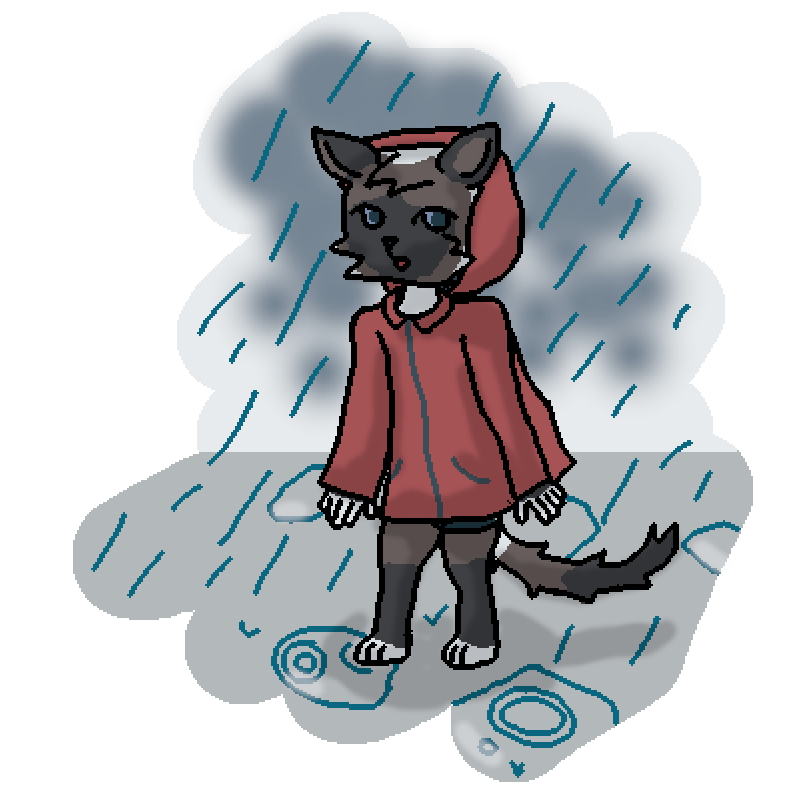
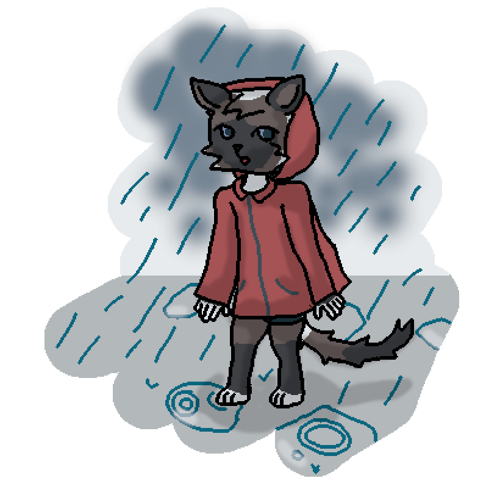

Kiwuar is antropomorphic cat, what is current fursona of Kiwii Devulopir
Profile:Sex: Male
Biological class: Cat
Country where born: Fur
Age: 15
Date of born: 12.02.16M(2007)
Date of created: 02.09.2022
Work: Student of Art School in country Art
Parents:
Mother: Julia
Father: Frank
Currency plan: 2nd plan(~5400S ) from 3rd plan(~3800S)
Intrestings: artist
Traits: Cheerful (mainly to family), Introverty (in crowded places), Creative (in his arts), Lazy (at home)
Mother of Kiwuar, Julia sometimes cooked for him a spagetti. It's his favourite dish. Kiwuar - "The dish fills my heart tomatoes and flavour of basil...".
His family wanted to be in the calm places, such as: forests, valleys, etc. Father of Kiwuar, Frank - "I think, what nature is more beautiful, when you don't see a voidness".
He wanted go to Art school because his friend Kevin told, what in country Edu is good art school, but, unfortunatly, the country was captured by Island coalition. After a revenge war with Island coalition and Contin's union, the coalition was broke down and formed a lot of new countries like Art or </>. He remembered, what he wanted to get to Art school, and decided to learn closier to home.
He met Jania, when Kiwuar was in secondary school. She was in local trade school, but sometimes at breaks, she sneak to school, where was Kiwuar for hanging out with her friends. When Kiwuar saw her, he don't paid attention to her, but when Jania saw him, then in his school table was letter by her. Letter - "Hello, dear IDK what's your name. I think, what you are soo sleepy... Can you join to my hanging session? Hide your letter under the school table. - Jania". When he read the letter, Kiwuar decided to join to the session. Kiwuar - "She looks calm and brave to call me to a school lunch".
One time, at Valentine day, he got a love letter. He was shocked with it, because he don't know who was writed the letter. Kiwuar asked Jania about it and she didn't write the letter for him. He started to ask eveyone in the school for the letter. Kiwuar has found Alexa, what accepted, what she has writed the letter. Both started to act nervous, because he didn't expected about attraction from random person, and she was attaracted to Kiwuar and thought a lot. There're hardly talked about the letter, but lately she started to saying to him, what she feels attraction to him. Everyone, who was nearby heared about this. Kiwuar - "Alexa told me, what I was at her attention and when she saw me, then Alexa started to spectate for him a lot of time, but I didn't trust her, and said "Ok, that was intense, bye!". But Alexa started to chasing me, that was scared. But unfortunatly, she got me, and I was in difficult situation, she surrounded me near the wall. You can imagine me as scared, and that's true. She started to flirting me very tense. But thanfully, the lesson was started, and at the next break I escaped from the school" [Yeah, unconnectable relationships, just it was a situation, when she was there before reattach to another school]
Gallery:
 



 [by @Uki7UqvfzqQJ36j]
[by @Uki7UqvfzqQJ36j]
 [by u/Liquid_Depresso]
[by u/Liquid_Depresso]